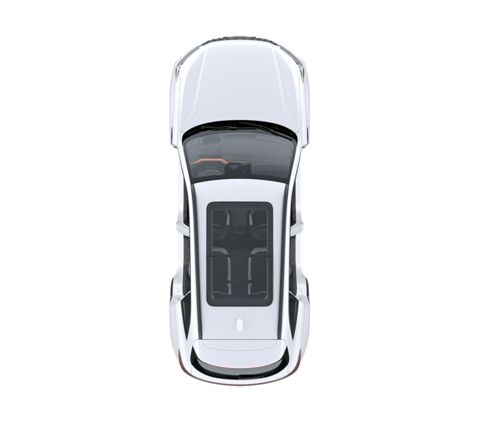

O carro já começa com as luzes onde o app desenha hoje. Para corrigir alguma, escolha a luz e clique no lugar certo; para inclinar a peça, clique e arraste antes de soltar. No fim, copie o texto de baixo e me mande — pode mandar só as linhas que você mexeu.
(nada marcado ainda)